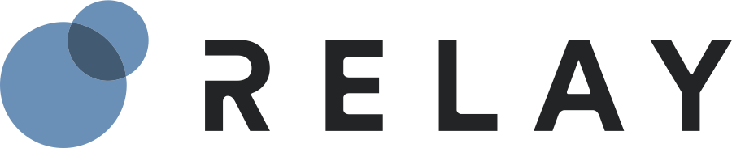

rn-ace-unit Documenation Page
This repository is for calculating active customer engagement data for billing purposes
To view the RFC, please visit confluence.
Project Layout
deploy/ # Contains python file used to deploy files to s3 during Codebuild.
infrastructure/ # TF files which build and deploy AWS resources during CICD
pipeline/ # Used by the rn-release-tool to build Codepipeline used to run CICD
rn/ # Parent folder
ace_unit/ # python code used by Glue for ace unit processes
common/ # shared python modules used by multiple jobs
datalake/ # python code used by Glue for datalake processes
tests/ # Files used to run unit tests
Daily Jobs
ace_unit
- Daily job is kicked off at 4:15AM EST. Both
notification_attempted_dailyandnotification_delivered_dailyand run in parallel. notification_attempted_dailyglue job runs to buildnotification_attemptedAthena table.notification_attempted_crawlerruns to make new data accessible in Athena.notification_delivered_dailyglue job runs to buildnotification_deliveredAthena table.notification_delivered_crawlerruns to make new data accessible in Athena.- After both of the previous jobs have completed successfully,
ace_unit_calc_dailyglue job runs to buildace_unit_audit_tableandace_unit_agg_tableAthena tables. ace_unit_audit_crawlerandace_unit_agg_crawlerrun to make new data accessible in Athena.- estimated run time in production: 12 minutes
graph TD;
notification_attempted_daily-- noti_att_crawler -->ace_unit_calc_daily;
notification_delivered_daily-- not_deliv_crawler -->ace_unit_calc_daily;
ace_unit_calc_daily-- ace_unit_audit_crawler -->ace_unit_audit_table;
ace_unit_calc_daily-- ace_unit_agg_crawler -->ace_unit_agg_table;
datalake
outcome_experience_lookup_dailyglue job is kicked off at 4:15AM EST. This runs to buildoutcome_experience_lookupAthena table which is then deduplicated via thev_dim_customerAthena view.outcome_experience_lookup_crawlerruns to make new data accessible in Athena.dim_customer_daily_glueglue job is kicked off at 4:15AM EST and replicates thedim_customertable from the datawarehouse in the datalake. This involves connecting to Redshift and running an unload statement. This buildsdim_customerAthena which is then deduplicated via thev_dim_customerAthena view.
Monthly Jobs
ace_unit_monthly_output: python shell job that runs in Glue. Job runs at 5AM EST on the first of the month.- Job grabs relevant data from
ace_unit_agg_tablein Athena and pushes the data tocom.relaynetworks3 bucket for Joe Doran to access. - estimated run time in production: 30 seconds
- Job grabs relevant data from
ace_unit_monthly_outcome_experience_output: python shell job that runs in Glue. Job runs at 5AM EST on the first of the month.- Job grabs relevant data from
ace_unit_audit_tableand joins it withoutcome_experience_lookupin Athena and pushes the data tocom.relaynetworks3 bucket for Finance to access. This is a different view of the data thanace_unit_monthly_output. The data is grouped at a different level and contains additional columns. - estimated run time in production: 30 seconds
- Job grabs relevant data from
Built With
- AWS Glue - Fully managed ETL framework hosted in AWS
- https://docs.aws.amazon.com/glue/latest/dg/aws-glue-programming-python-libraries.html
- Release notes including versions: https://docs.aws.amazon.com/glue/latest/dg/release-notes.html
- https://docs.aws.amazon.com/glue/latest/dg/migrating-version-30.html#migrating-version-30-appendix-dependencies
- PySpark - PySpark is an interface for Apache Spark in Python.
- AWS CodePipeline - Fully managed continuous delivery service
- Terraform - Open-source infrastructure as code software tool
- Add any additional libraries, services, or frameworks used
Docker Setup
- Pull the amazon glue Docker image down to your local machine (docker desktop must be installed):
docker pull amazon/aws-glue-libs:glue_libs_3.0.0_image_01 - Run your docker image in interactive mode and mount this github repo to it (change folders below as needed to match your local folder setup):
docker run -it -v /Users/jrose/Documents/Github/rn-ace-unit:/home/glue_user/workspace -v ~/.aws:/home/glue_user/.aws -p 8888:8888 -e DISABLE_SSL=true --rm --name ace_unit_glue amazon/aws-glue-libs:glue_libs_3.0.0_image_01 - If you want to open a Juptyer Notebook, run the following and then go to
localhost:8888:sh /home/glue_user/jupyter/jupyter_start.sh
Versioning
TODO